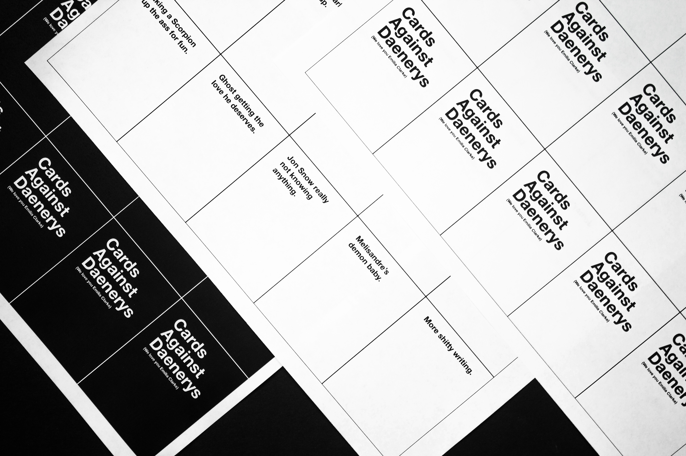
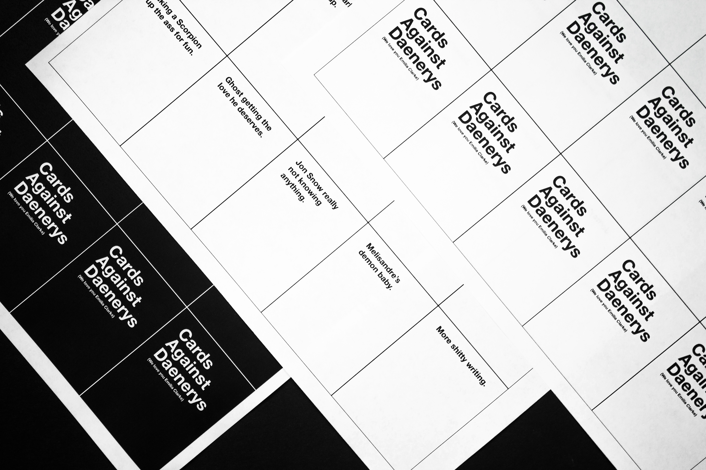

19.3 million people watched the final episode of the Game of Thrones series with myself included. It has been made known that at least 8 million of those viewers were already up to their eyeballs in disappointment. As I was making coffee in the morning, I thought, 'What if people were able to rewrite Game of Thrones but in a sort of fun ad lib way'. Then it clicked: one of the most popular ad lib/fill-in-the-blank games is Cards Against Humanity, so why not do a little parody. Thus this fun little Sunday morning project. (Also, I apologize for the foul language you may have already found throughout this project).
Devising black cards (topics/sentences with blanks) while also coming up with white cards (phrases/words/ideas) that fit each of them was the most challenging aspect. Not to mention, I had to actually try to be funny.
Some research had to be done, so I watched recaps of the final season to get ideas started. After a bit of inspiration, I was able to find a rhythm of ideas that clicked. Unfortunately, some ideas I had in mind did not fit. By studying the original game a bit, I realized that the white cards needed to be primarily nouns (with perhaps some descriptive aspects) or states of being. It was by then I could write better sentences for the black cards.


 
